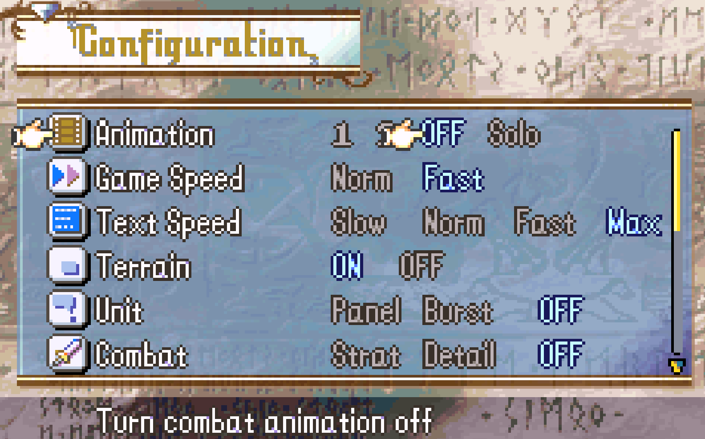
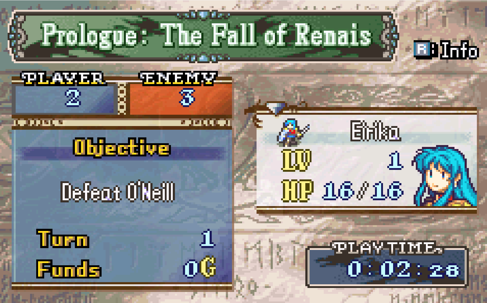

This week, I have continued the experiment with Gym Retro on Fire Emblem: The Sacred Stones. There were a few quick discoveries that I found that make the game a lot easier to simulate. The first is the fact that there is a configuration in the game that I missed, as shown below.
With the configuration, I am able to achieve a lot of things. First and most importantly, I am able to remove the combat animation completely. There is still a short delay after each attack showing the change in health and experience, but over all, it takes much shorter time for the attack command to correctly update the health value from memory address. I am also able to speed up the dialogue animation speed as well as the movement animation speed, allowing a quicker gameplay, thus shortening the simulation time.
With more understanding of the brute force algorithm from last week, I have started making modification to it. The first change I made is to the action space. There are a lot of unnecessary actions in the original action space. With modification, I was able to reduce the action space to only the arrow keys and the a button, which I thought were necesasary for the basic gameplay of the game. However, even with the sped-up animations, removal of combat animation, and reduced action space, the brute force approach was still not able to produce optimal results. And the customization part gym retro offers in the algorithm is actually quite minimal. So I have decided to rely on Gym and Gym Retro for the simulation and recurrent learning, but handles the character movement part myself. So the neural network can decide on the actual strategy of the game instead of trying a huge amount of time to try to figure out the control first, which is unavoidable if I try to rely fully on Gym Retro for the whole process.
With the new objective in mind. I have started on figuring out how to actually do the control. First, there are a lot of very obvious stats I can use to help the algorithm actually play out the turn, as shown in the status screen here.
The status screen consists of a lot of very important variables I can use on. Player number is one of them, I can search up the value in the memory later. But currently, I am manually inputting it as I am still only working on the tutorial level, so it's always two. This way, I can easily know how many characters I am done moving with and how many more I need to move before the end of current turn. The next one is turn. I was able to find the value pretty easily. The value changes exactly at the time of entering the player phase. So by tracking it myself, I am able to check the exact moment the algorithm can control the characters again.
Another important thing to notice is the usage of the 'L' key. Scalablity needs to be considered as the game goes on, the later levels are going to have more controllable characters. L key puts the cursor on the next available character. So after the algorithm is done with one character, L key can be pressed once to guarantee the next character is selected, and with the number of player characters available, it is not difficult to find out the time a turn is done.
A character's turn in a turn consists of the following phases: the movement, the actions, and the target selection, and potential animation. The end of the character's turn is actually trackable by a variable. This variable, during the player phase, indicates whether the cursor is on a character that is available for control. Conveniently, the variable syncs up with when the character is done with everything, either by waiting, or by the end of the attack animation. So this variable's change from 1 to 0 guarantees the end of a character's turn.
A player's movement looks like the image above. It is very difficult to actually figure out the available movemnt targets with the existance of terrains, enemies, friendly characters, and difference in movement points. So I have decided to simply do a iteration on the amount of horizontal button presses and vertical button presses to iterate through the map. This, combined with a variable that indicates whether a movement is legal, can quickly iterate through all possible movements a character can make.
After the movement, the action must be decided. Currently, I want to only focus on attack and wait, the two most basic actions. Commands such as item complicates the action space greatly, and is not necessary at all in the easier levels such as the tutorial level I am currently working on. To decide on whether the unit should attack, one must know that whether it is possible to attack first. This is because the attack command only shows up when there are enemy units in the character's attack range, the difference in the available commands can be shown in the two images of the actions available above. Luckily, I was able to search up a variable that indicates whether an attack is possible. The target selection of the attack actually only selects on legal targets, so most often only an A press is needed to actually do the attack.
Combining all this, I am able to play out the turn of the game from Python pretty efficiently. However, I still need to integrate the controls into the recurrent learning either with Gym or with other platform. The integration will be my main goal this week. Once I am done with the integration, I should be able to make a lot of progress since the reward function and the end state are both pretty easy to decide for each level.